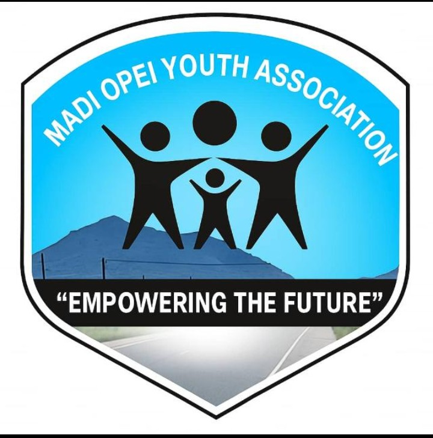
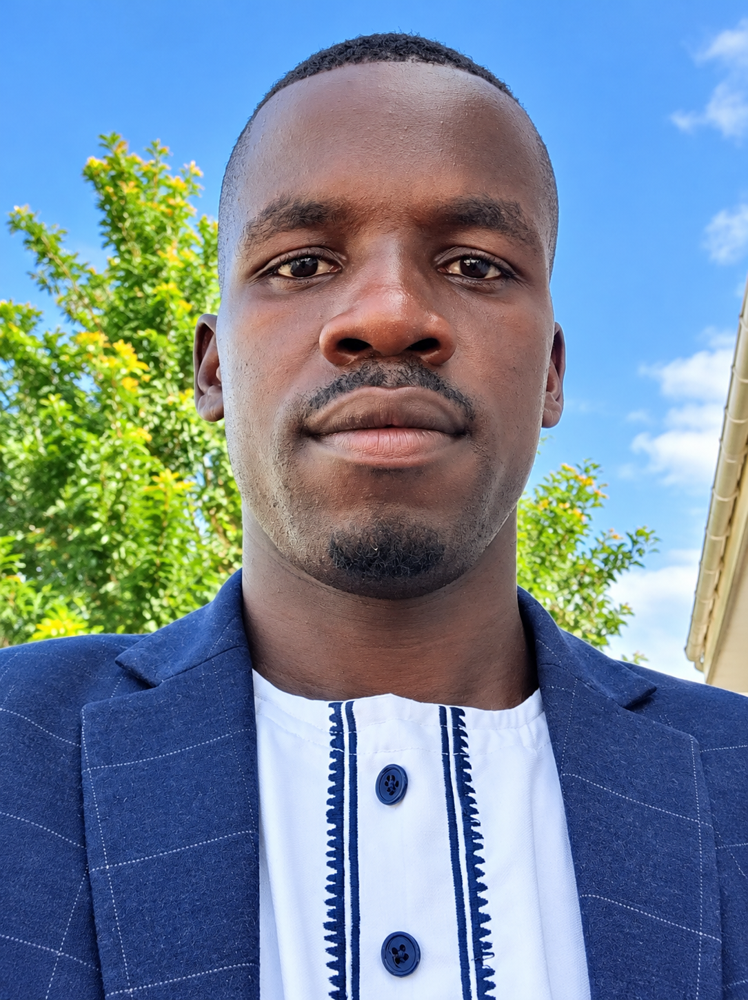
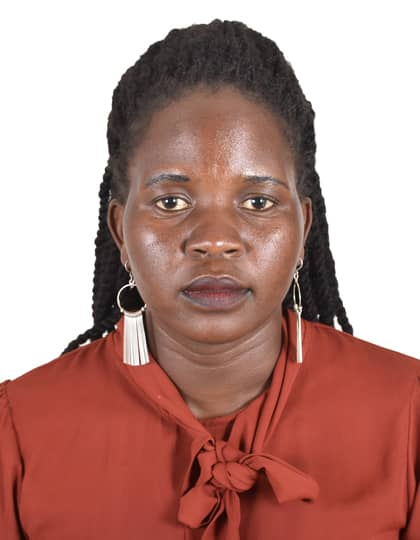
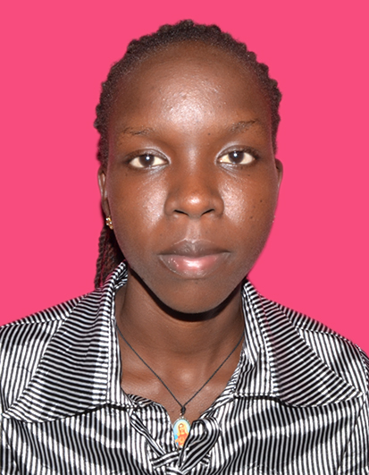
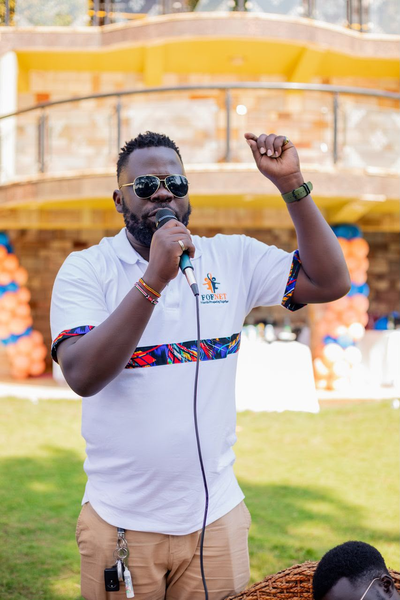

MOYA | Empowering the Future
Madi Opei Town Council, Lamwo District, Uganda
United in purpose, committed to empowering young people and transforming our community.
Discover MOYAMadi Opei Youth Association (MOYA) is a community-based youth association bringing together young people born in, living in and connected to Madi Opei and its surrounding communities. We believe that young people are important partners in community transformation and sustainable development.
Guided by our motto, “Empowering the Future,” we promote unity, responsibility, leadership, skills development, education, agriculture and community participation.
A united, empowered and self-reliant generation of young people contributing to the sustainable transformation of Madi Opei.
To mobilise, connect and empower young people through mentorship, skills development, productive activities and community-led initiatives.
Unity, integrity, accountability, inclusiveness, service, hard work and respect for one another.
Promoting leadership, mentorship, life skills, talent development and meaningful youth participation in community affairs.
Encouraging productive agriculture through cassava growing, planned coffee production and simsim cultivation to strengthen household food security and livelihoods.
Encouraging access to education, practical skills, knowledge sharing and opportunities for young people to develop their potential.
Mobilising young people to participate in voluntary service, environmental cleanliness, social support and local development initiatives.
Supporting the Madi Opei Premier League in partnership with Madi Opei Development Association (MODA) and the Office of Ker Kal Kwaro Madi Opei. The league brings communities together and promotes youth talent and teamwork.
Creating a platform for young people and community members to meet, share ideas, celebrate achievements and discuss the future of Madi Opei.
Our leadership team serves the association through commitment, responsibility and collective action.

Chairperson
Civil Engineer and youth leader committed to community transformation, unity and youth empowerment.
Vice Chairperson
Treasurer

Secretary

Vice Secretary
It is my honour to serve as Chairperson of Madi Opei Youth Association. My vision is to see a generation of young people who are united, responsible, skilled and actively involved in transforming their community.
I come from Orogo A Cell, Kal Parish, within Madi Opei Town Council. This is my village and an important part of my identity. My commitment, however, extends to all young people of Madi Opei and the surrounding communities.
I believe our future depends on what we build together today. Through unity, agriculture, education, sports, mentorship and meaningful participation, we can create opportunities and a better future for the next generation.
Let us work together, support one another and turn our shared vision into action.
Rubangakene Philips
Chairperson, MOYA

Mentor, Madi Opei Youth Association
MOYA recognises the importance of mentorship, guidance and experience in shaping the next generation. Our mentor supports the association by encouraging young people to believe in their potential, learn from experience and contribute positively to society.
Contact: +256 774 240242
Are you a young person or community member interested in contributing to the development of Madi Opei? We welcome your ideas, participation and support.
Location: Madi Opei Town Council, Lamwo District, Uganda
Association contact: 0789 813592
Treasurer contact: 0783 502982
Contact MOYA on WhatsApp